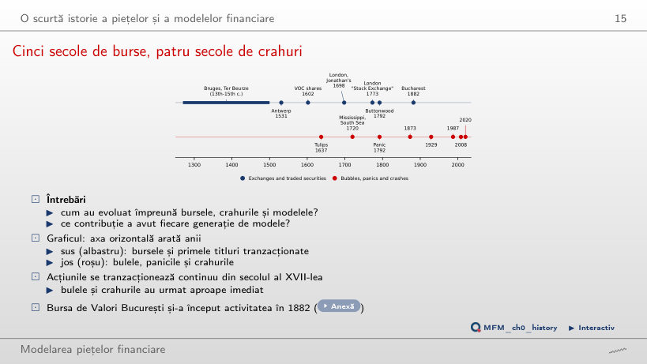
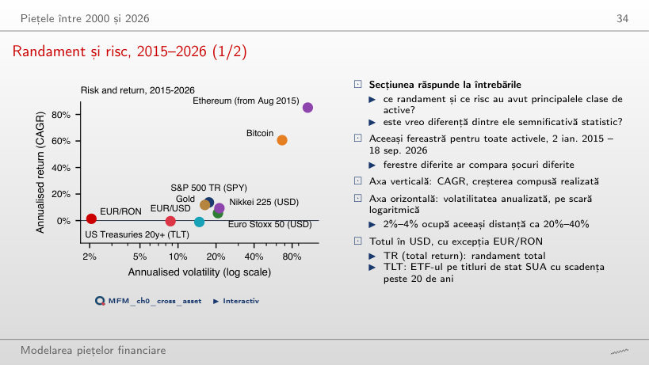
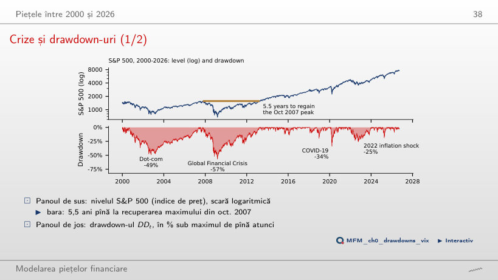
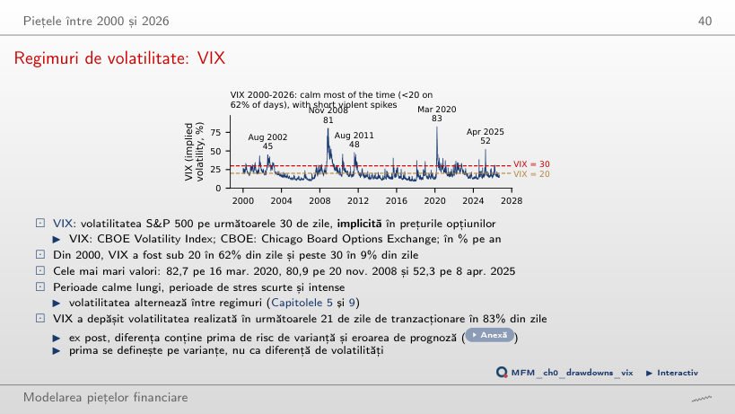
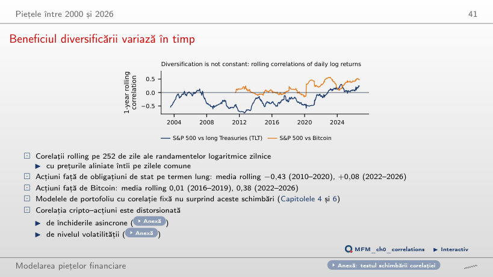
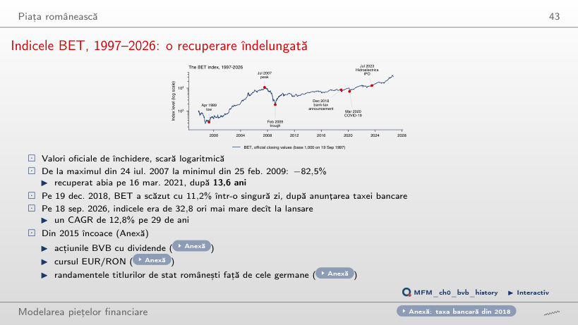
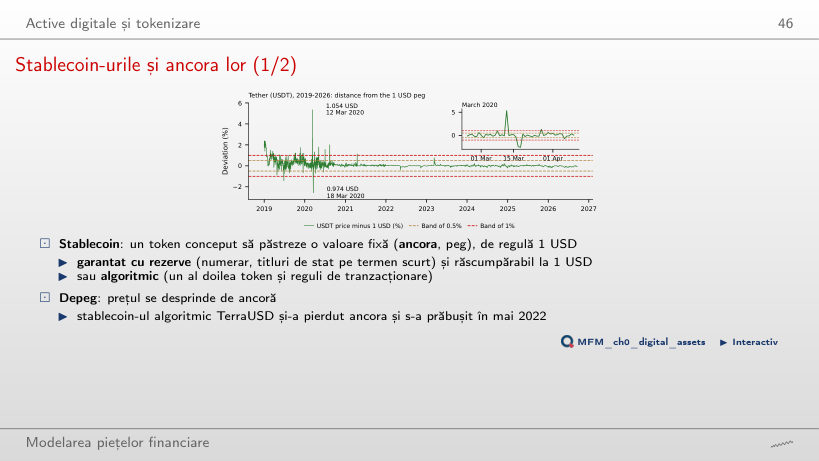
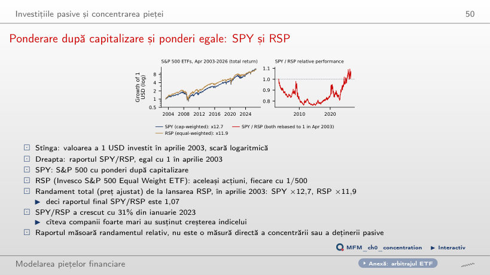
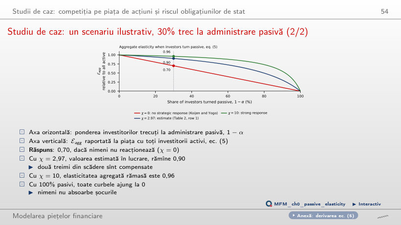
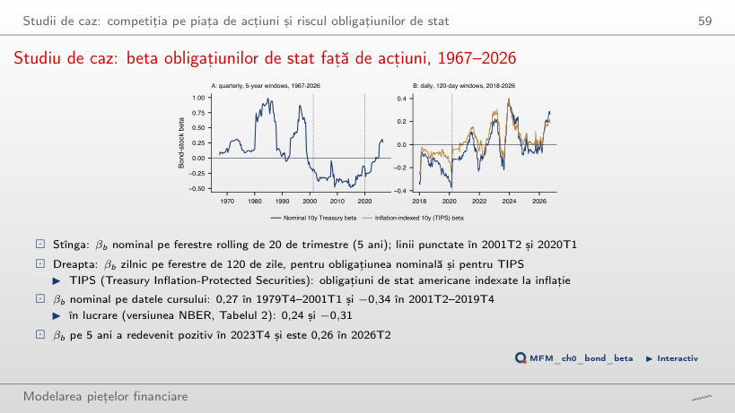

În stînga este slide-ul din curs, în dreapta aceeași figură, calculată în browser din aceleași date. Butonul ▶ modifică parametrul pas cu pas.
O scurtă istorie a piețelor și a modelelor financiare · Piețele între 2000 și 2026 · Piața românească · Active digitale și tokenizare · Investițiile pasive și concentrarea pieței · Studii de caz: competiția pe piața de acțiuni și riscul obligațiunilor de stat · AI pentru descoperire științifică
O scurtă istorie a piețelor și a modelelor financiare
Cinci secole de burse, patru secole de crahuri

Răspuns
Tulip mania, în 1637, la 35 de ani după 1602. Bulele Mississippi și Mării Sudului apar în 1720, iar panica în 1792. Bursa de Valori București și-a început activitatea în 1882.
Piețele între 2000 și 2026
Randament și risc, 2015–2026

Răspuns
Calculăm t = 1,9/6,8 ≈ 0,28. Nu respingem egalitatea mediilor; nu demonstrăm că mediile sînt egale. Testul folosește randamente simple, nu diferența CAGR-urilor din grafic (13,7% și 11,8%). Pentru un singur activ, eroarea standard a randamentului mediu anualizat, σ/√Y cu Y = 11,7 ani, este 5,1 pp la S&P 500 și 4,8 pp la aur. În modelul cu randamente iid, la aceeași volatilitate anuală și același orizont, eșantionarea mai frecventă nu reduce SE a mediei anualizate.
Crize și drawdown-uri

Răspuns
(1.565,15/676,53 − 1) × 100 = 131,3%. Scăderea de 56,8% folosește maximul ca bază; recuperarea folosește minimul. Valoarea finală reprezintă 231,3% din minim, deci creșterea este 131,3%. Revenirea a durat 5,5 ani de la maxim, pînă pe 28 martie 2013.
Regimuri de volatilitate: VIX

Răspuns
Sub 17 se află 45,4% dintre valori, iar sub 18 se află 51,4%. Prin urmare, pragul cerut este 18. Mediana este 17,75; rotunjirea ei în jos nu dă pragul cerut. Media, 19,79, este mai sensibilă la valorile extreme mari. VIX a fost sub 20 în 62% dintre zile și cel puțin 30 în 9%. Cele mai mari valori sînt 82,7 pe 16 martie 2020, 80,9 pe 20 noiembrie 2008 și 52,3 pe 8 aprilie 2025: perioadele calme sînt lungi, iar cele de stres scurte și intense.
Beneficiul diversificării variază în timp

Răspuns
Rămîne aproape de zero: +0,10 cu fereastra de 63 de zile, +0,08 cu 252 și −0,02 cu 756, iar media din 2010–2020 rămîne între −0,42 și −0,44. Schimbarea nu vine din fereastră: din 2022, TLT nu mai cîștigă, în medie, în zilele în care acțiunile pierd. Calculată direct pe fiecare subperioadă, corelația este −0,47 și +0,11. Corelația S&P 500–Bitcoin a crescut de la 0,01 (2016–2019) la 0,38 (2022–2026).
Piața românească
Indicele BET, 1997–2026: o recuperare îndelungată

Răspuns
De la maximul din 24 iulie 2007 pînă la recuperarea din 16 martie 2021 au trecut 13,6 ani. Indicele a scăzut cu 82,5% pînă la minimul din 25 februarie 2009; cei 12,1 ani măsoară intervalul de la acest minim la recuperare. Cei 5,5 ani se referă la recuperarea maximului S&P 500 din 2007. Pe întreaga perioadă 1997–2026, BET a crescut de 32,8 ori, un CAGR de 12,8%.
Active digitale și tokenizare
Stablecoin-urile și ancora lor

Răspuns
Proporția este 93,0%. Valoarea de 98% corespunde benzii mai largi, de ±1%; circa 7% este proporția din afara benzii de ±0,5%. Calculul folosește cotațiile zilnice disponibile și nu descrie toate variațiile intraday. Abaterile extreme sînt din martie 2020: 1,054 USD pe 12 martie și 0,974 USD pe 18 martie.
Investițiile pasive și concentrarea pieței
Ponderare după capitalizare și ponderi egale: SPY și RSP

Răspuns
Raportul final devine 1,396, aproximativ 1,40. Valoarea de 1,07 corespunde începutului din aprilie 2003; 1,31 corespunde începutului din ianuarie 2023. Rebazarea schimbă raportul final deoarece schimbă baza comparației. Concluzia depinde însă de data de sfîrșit: raportul, egal cu 1 în aprilie 2003, coborîse la 0,76 în aprilie 2015, iar avantajul SPY provine din creșterea de 31% a raportului din ianuarie 2023. Un randament realizat mai mare nu arată o primă așteptată.
Studii de caz: competiția pe piața de acțiuni și riscul obligațiunilor de stat
Studiu de caz: un scenariu ilustrativ, 30% trec la administrare pasivă

Răspuns
Scade de la 1,00 (χ = 0) la 0,32 (χ = 2,97, estimația din lucrare) și la 0,13 (χ = 10): investitorii activi compensează o parte tot mai mare din fiecare trecere la administrare pasivă. Rata de transmitere nu este ponderea activă α. Elasticitatea agregată rămasă, ec. (5), este 0,70 cu χ = 0, 0,90 cu χ = 2,97, deci două treimi din scădere sînt compensate, și 0,96 cu χ = 10.
Studiu de caz: beta obligațiunilor de stat față de acțiuni, 1967–2026

Răspuns
Modificarea valorii ajustate este (−0,34) × (−1 pp) = +0,34 pp. Semnul negativ (SE 0,06) indică o asociere de sens opus în această subperioadă; nu garantează un cîștig în fiecare trimestru cu scăderi ale acțiunilor. Valoarea de 2,94 provine din inversarea nejustificată a coeficientului. În 1979T4–2001T1 beta este 0,27. În 2020T1–2026T2 beta nominal este 0,00 (SE 0,17), iar cel al TIPS 0,19 (SE 0,13). Pe randamentele zilnice din 2026 (pînă pe 18 septembrie), beta nominal, 0,22, trece peste cel TIPS, 0,17; pe fereastra de 120 de zile din grafic, valorile din 18 septembrie sînt 0,27 și 0,19.
AI pentru descoperire științifică
Prețuri zilnice EODHD pînă la 18 sep. 2026: indici, ETF-uri (prețuri ajustate), aur, Bitcoin, Ethereum, USDT; BET: valori oficiale de închidere. Cursurile USD/EUR și JPY/USD din FRED, cursul EUR/RON de referință al BNR. Studiile de caz: Haddad, Huebner și Loualiche (2025), ec. (5) și Tabelul 2; Pflueger (2025), Figura 1, cu randamentele FRED DGS10, DFII10 și DTB3, piața SUA din biblioteca Kenneth French și SPY.